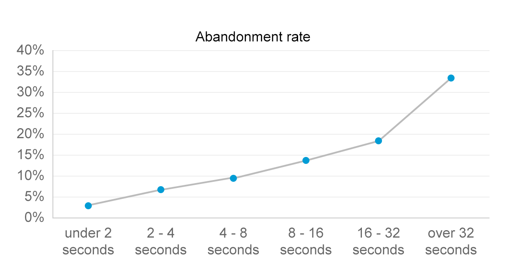
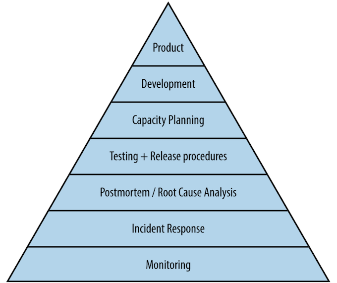
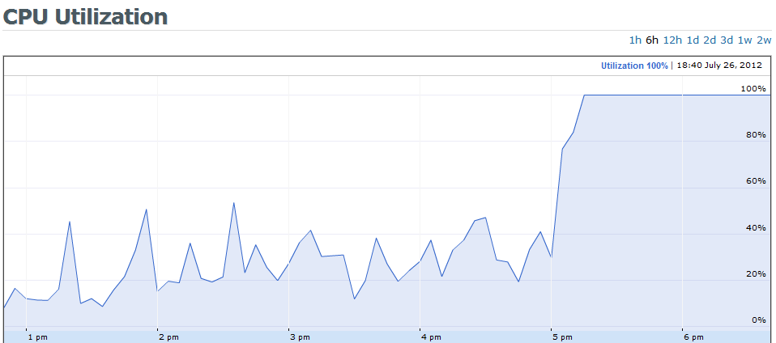
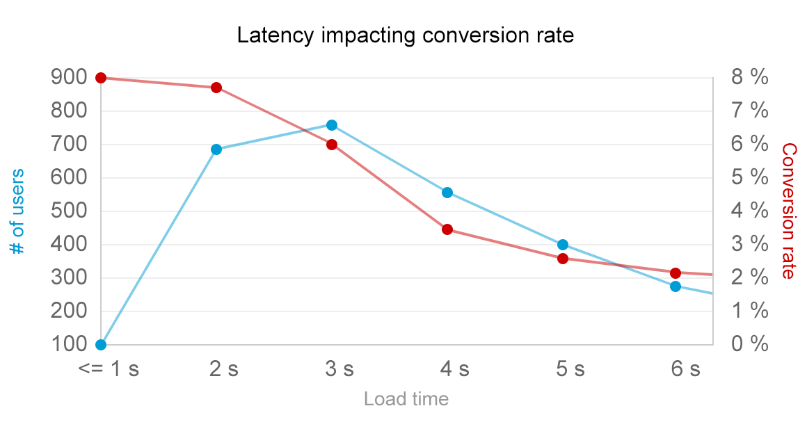
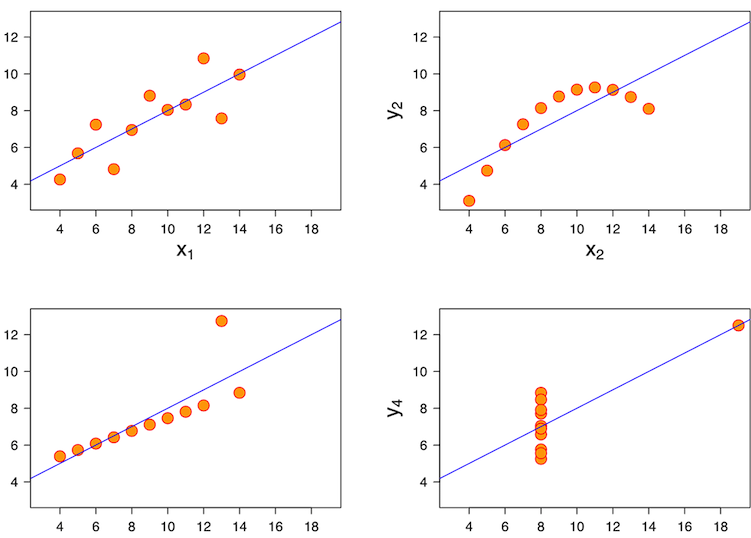

How Do I make It Perform Reliably
@gvsmirnov from Plumbr
me@gvsmirnov.ru
#topconfEE
Very Scare
- Adding 1 second to the search time, the number of searches in Bing dropped by 1.5%.
- A/B tests in Amazon revealed that each 100ms in the time it took to load a page reduced the sales of Amazon by 1%.
- According to Akamai, 75% of online shoppers who experience a crash, freeze or slow render time will no longer buy from that site.
Users don't like to wait

Devs VS Ops:
a structural conflict
- Devs want to release new stuff
- Ops want stuff to just work
- But devs will inevitably break stuff
Enter DevOps
YOU have to make sure your stuff works
If a microservice goes down in a cluster,
but no user gets impacted,
is there a downtime?
Embrace failure
Stop pretending you can avoid it
Start making sure that when shit hits the fan,
you can quickly recover

(source: Google SRE book)
But what does "performs reliably" even mean?
Does the app perform well?

Use infra monitoring to:
- ☑ Receive early alerts for resource exhaustion
- ☑️ Harvest information for capacity planning
- ✗ Try to figure out user experience
Use logging to:
- ☑ Capture state at business-critical points
- ☑️ Have evidence for troubleshooting issues
- ✗ Detect that something is wrong
- ✗ Log all the things!
Use health checks to:
- ☑ Sanity check your services: process up, port open
- ☑️ Check availability from different parts of the globe
- ✗ Measure the performance
- ✗ Understand user experience
«All the requests must be HTTP 200 OK»

«Average time must be < 5 sec»

«99.9 pctile must be <5 seconds»
This is not enough! What if your most valued
user lives at the 99.99 percentile? (happens all the time)
Monitoring actual
User Experience
This is not a marketing talk
but... ;)
Shit has hit the fan, now what?
- Estimate impact
- Restore service (VS) capture evidence
- Find the root cause
- Deploy the fix
- Write a postmortem
Establish on-call duty rotation
Join the Bayesian Conspiracy